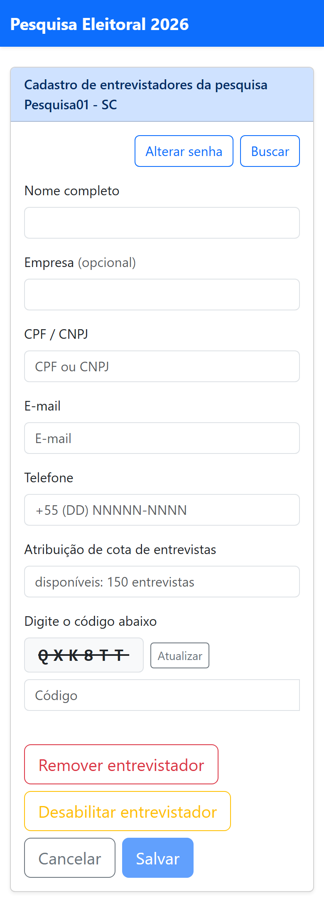

Parte 3 — Modo de operação
8. Entrevistadores
Os entrevistadores são as pessoas que vão a campo aplicar as entrevistas. No painel de gestão, toque em Cadastro de entrevistadores.

8.1 Cadastrar um entrevistador
- Preencha Nome completo, Empresa (opcional), CPF / CNPJ, E-mail e Telefone.
- Em Atribuição de cota de entrevistas, você pode já definir quantas entrevistas destinar a essa pessoa (opcional).
- Toque em Salvar.
No primeiro cadastro, o entrevistador recebe por e-mail o endereço do aplicativo e uma senha provisória, que ele troca no primeiro acesso. É o mesmo fluxo que você fez em §2.
8.2 Habilitar ou desabilitar
Na edição de um entrevistador, o botão Desabilitar entrevistador / Habilitar entrevistador controla se ele pode iniciar entrevistas. Um entrevistador desabilitado continua cadastrado e vinculado à pesquisa, mas não inicia entrevistas até ser habilitado de novo. Use isso, por exemplo, para pausar temporariamente alguém sem removê-lo.
8.3 Remover um entrevistador
O botão Remover entrevistador (em vermelho) desvincula a pessoa da pesquisa, após confirmação. O saldo de entrevistas que estava com ela, e que ainda não foi realizado, retorna ao saldo a distribuir do segmento correspondente, pronto para ser repartido novamente.
8.4 Localizar um cadastro
O botão Buscar permite localizar um entrevistador por e-mail ou CPF/CNPJ.